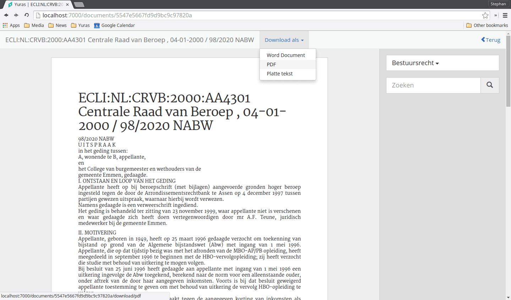
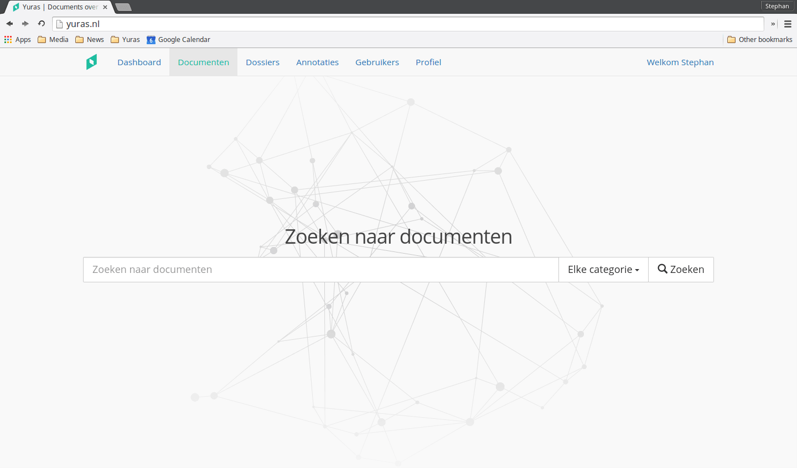

Juridische professionals besteden maandelijks
uren aan het doorlezen en bestuderen van jurisprudentie en andere relevante data voor elke casus.
Yuras verandert dit.
Yuras
analyseert documenten, vind de meest relevante woorden en pikt deze er
algoritmisch uit. Op basis hiervan worden andere documenten aangeraden en gelinked. Hiermee kunt u snel een bundel met documenten opbouwen voor een casus.
Yuras is
snel. De nieuwste technieken worden gebruikt om bijna een half miljoen documenten te doorzoeken. Alles wordt bij ons zelf opgeslagen,
dus hoeft u
niet meer langs verschillende sites om bij de data te komen waar u naar zocht.
De
gebruiksvriendelijke interface met bekende elementen zorgt ervoor dat u snel aan de slag kan. Als u heeft gewerkt met Microsoft Word en een browser, kunt u werken met Yuras. Voor toegewijde gebruikers zijn
workshops beschikbaar.
Features
Yuras biedt een unieke set aan features die uw workflow aanzienlijk kunnen bevorderen. Deze zijn vooral gericht op het efficienter maken van het vinden van jurisprudentie en het doerzoeken van relaties tussen verschillende documenten.

Lees de jurisprudentie en arresten met de geavanceerde viewer, met revolutionaire annotaties, die het vinden van gerelateerde jurisprudentie en arrest gemakkelijk maakt.
Verfijn uw zoekopdrachten met de zoekopties van Yuras. Zie in één oogopslag hoe relevant de resultaten zijn en hoe ze aan elkaar gerelateerd zijn.
Houd verschillende dossiers met documenten bij, gebruik de dossiers om gerelateerde jurisprudentie en arresten te vinden.

Gebruik de krachtigste zoekmachine voor juridische documenten om precies de jurisprudentie en arresten te vinden die u nodig heeft.
Ga direct aan de slag met het overzichtelijke dashboard met de meest recent opgezochte data.
Prijzen
Prijzen bij Yuras zijn
simpel. Wij zijn er van overtuigd dat we u tijd kunnen besparen met onze producten. Door onze prijzen niet te baseren op de kosten van het product, maar op
wat het uw bedrijf oplevert, kunnen we ons optimaal richten op het leveren van het beste product en de
beste service. We hebben dus drie opties:
Strippenkaart
€ 24,-
Een strippenkaart met 7x 24 uur onbeperkte toegang tot Yuras.
Bestel nu
Meest gekozen
Maandelijks
€ 49,-
Altijd onbeperkt toegang tot Yuras, betaling per maand.
Bestel nu
Beste prijs!
Jaarlijks
€ 499,-
Altijd onbeperkt toegang tot Yuras, voor de beste prijs!
Bestel nu
Ons onderzoek wijst uit dat één uur van de tijd van een jurist hun werkgever 100 tot 200€ kost. Als Yuras uw bedrijf
een half uur per maand, per gebruiker bespaart dan heeft u de kosten er al uit.
Early Access
Met het Yuras Early Access Programma kunt u als één van de eersten gebruik maken van Yuras. U krijgt altijd toegang tot de nieuwste features en fixes.
Daarnaast is het € 10,- goedkoper en vinden er
geen prijsverhogingen plaats. De eerste 90 dagen kunt u op elk moment stoppen,
en krijgt u het volledige bedrag terug.